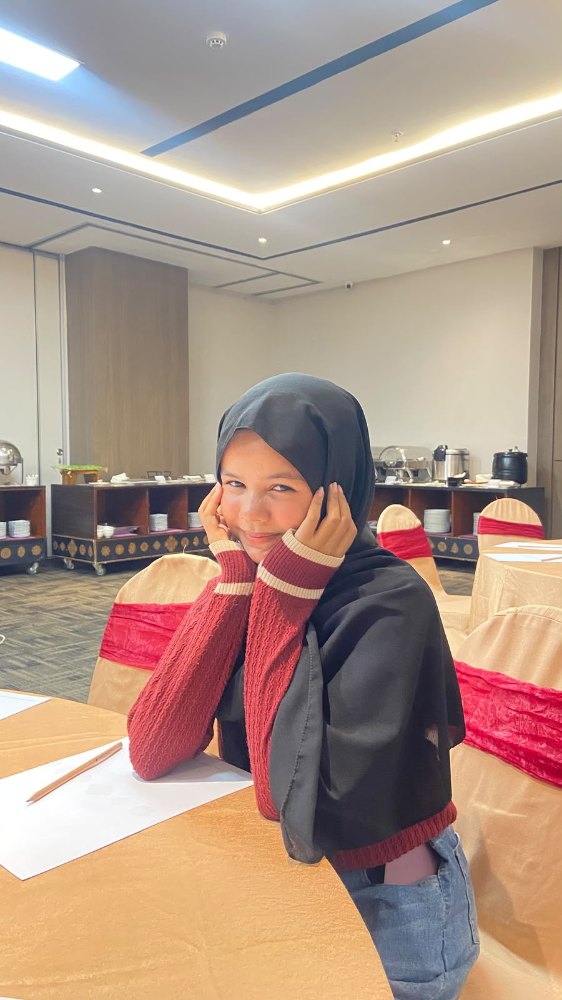

✦ Hai, selamat datang!
I'm Jihan Fahira
Ini adalah website sederhana tentang diriku. Di sini kamu bisa mengenal sedikit tentang siapa aku, hobiku, dan beberapa hal yang aku sukai.

Sedikit tentang aku
Halo! Aku Jihan 👋
Namaku Jihan Fahira. Aku berasal dari Padang dan punya beberapa hal yang aku sukai dalam kehidupan sehari-hari.
Salah satu hobiku adalah menulis. Aku juga suka warna pink, makanan bakso, minuman es coklat, dan tentu saja kucing.
Website ini dibuat sebagai tempat sederhana untuk memperkenalkan diriku dan memberikan sedikit gambaran tentang diriku.
Data diri
Beberapa informasi tentang aku.
Jihan Fahira
Jihan
Padang, 03-05-2009
Jl. Denai
Hobiku
Hal yang suka aku lakukan di waktu luang.
Menulis
Menulis adalah salah satu kegiatan yang aku sukai. Dengan menulis, aku bisa menuangkan cerita, pikiran, atau berbagai hal yang sedang ada di pikiranku.
Hal yang aku suka
Beberapa favoritku.
Bakso
Es Coklat
Romance
Pink
Kucing
Curriculum Vitae
Ingin mengetahui lebih banyak tentang aku? Kamu bisa melihat atau mengunduh CV-ku melalui tombol di bawah.